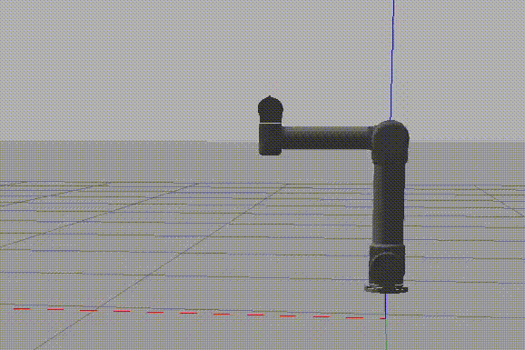

Projects > Robot Motion Planning
Robot Motion Planning
September 2021 - October 2021

Figure 1: Demonstration of robot motion.
Description
In this project, I programmed a UR5 robot using Gazebo for
the simulation environment, MoveIt for motion planning, and
a custom-written Python script for determining the robot's path.
The goal of the robot motion planning is to make the end effector
trace my initials 'TH' in space. An animated demonstration
of this task successfully completed is shown in Figure 1.
Figure 2: Robot action paths for the letters 'T' and 'H'. For the robot end effector to trace my initials ‘TH’ in space, it must execute a minimum of eight linear movements, as shown in Figure 2. Before beginning to trace my initials, however, the robot must first be moved to a starting position from which it has sufficient mobility to execute the rest of the movements. Once the robot is in the defined starting pose, it will begin to trace the letter ‘T’ and then the letter 'H'.
Motion Planning Script
#! /usr/bin/env python
# Import packages
import sys
import copy
import rospy
import moveit_commander
from math import pi
# Initialize node and instantiate moveit objects
moveit_commander.roscpp_initialize(sys.argv)
rospy.init_node('move_group_python_interface_tutorial', anonymous=True)
move_group = moveit_commander.MoveGroupCommander("manipulator")
# Set initial joint goals
joint_goal = move_group.get_current_joint_values()
joint_goal[0] = 0
joint_goal[1] = -90 * pi/180
joint_goal[2] = 90 * pi/180
joint_goal[3] = -180 * pi/180
joint_goal[4] = 0
joint_goal[5] = 0
# Move robot to starting joint position
move_group.go(joint_goal, wait=True)
move_group.stop()
# Define waypoint planning function
def waypoint_plan(wp):
"""
Generates a cartesian path for the end effector given waypoint parameters.
param wp: a list of form [x, y, z] which specifies relative change from current pose
return: a plan to move end effector to specified waypoint
"""
waypoints = []
wpose = move_group.get_current_pose().pose
# Calculate waypoint from current pose and waypoint parameters
wpose.position.x += wp[0]
wpose.position.y += wp[1]
wpose.position.z += wp[2]
waypoints.append(copy.deepcopy(wpose))
# Compute cartesian path for end effector
(plan, fraction) = move_group.compute_cartesian_path(
waypoints, 0.01, 0.0
)
# Return movement plan
return plan
# Trace out the letter 'T' with end effector
move_group.execute(waypoint_plan([0, 0, 0.15]), wait=True) # Move in +z direction (up)
move_group.execute(waypoint_plan([0.1, 0, 0]), wait=True) # Move in +x direction (left)
move_group.execute(waypoint_plan([-0.2, 0, 0]), wait=True) # Move in -x direction (right)
# Move end effector to new starting position
move_group.execute(waypoint_plan([0.2, 0, -0.15]), wait=True) # Move in +x and -z directions (left + down)
# Trace out the letter 'H' with end effector
move_group.execute(waypoint_plan([0, 0, 0.15]), wait=True) # Move in +z direction (up)
move_group.execute(waypoint_plan([0, 0, -0.075]), wait=True) # Move in -z direction (down)
move_group.execute(waypoint_plan([-0.1, 0, 0]), wait=True) # Move in -x direction (right)
move_group.execute(waypoint_plan([0, 0, 0.075]), wait=True) # Move in +z direction (up)
move_group.execute(waypoint_plan([0, 0, -0.15]), wait=True) # Move in -z direction (down)
# Exit script
moveit_commander.roscpp_shutdown()